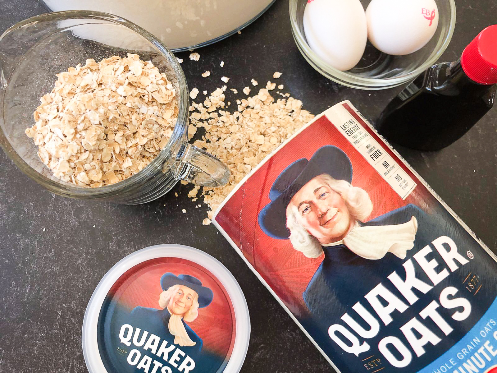

During the intricate process of product manufacturing and distribution, unexpected challenges can occur, compromising the safety of consumers and the reputation of organizations. A recent instance of this that exemplifies product recall and crisis management is Quaker Oats, a popular food company that specializes in various breakfast items.
On December 15, 2023; Quaker Oats issued a recall of their popular chewy granola bars after uncovering a connection between the bars and salmonella. The company did not disclose the source of the salmonella contamination. While no illnesses were reported, the potential risks of salmonella, including a risk of death or serious illness for the elderly and immunocompromised, prompted immediate action from Quaker Oats and leading to the recall. A month later, on January 11, 2024, Quaker Oats expanded the recall to include cereals like Captain Crunch Sea Berry Crunch Cereal and protein bars like Gatorade protein bars. The cause of this contamination is still unknown by Quaker Oat. For each recall, Quaker Oats issued a press release stating the facts of the recall, and encouraged consumers to throw away recently purchased Quaker Oats products. This is not the first time that Quaker Oats has had to recall a product. In 2018, the company had to recall their peanut butter Captain Crunch cereal for potential salmonella. This major recall received coverage from many small news markets, with journalists taking to Twitter (X) to warn others about the potential threat. Hundreds of videos were made on TikTok to raise awareness about the recall, with many in the comments expressing gratitude for the information. Lighthearted musical group @Lewberger on TikTok posted a parody video on TikTok explaining the situation in a lighthearted tone.
I think it's really unfortunate that they couldn't pinpoint a cause. While I commend Quaker Oats for being transparent in their lack of knowledge about the source, they should continue to investigate this matter so that they can take corrective action. I understand that this lack of information is out of their control, but taking accountability is only one part of the resolution. I think that one thing Quaker Oats could have done as an action statement is to outline how they are investigating this matter. That way, stakeholders understand that the company is putting in effort to ensure their safety.